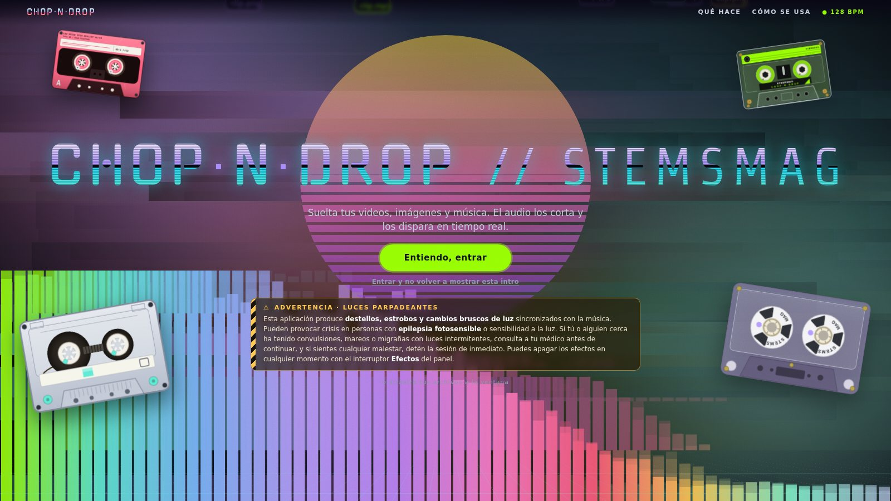
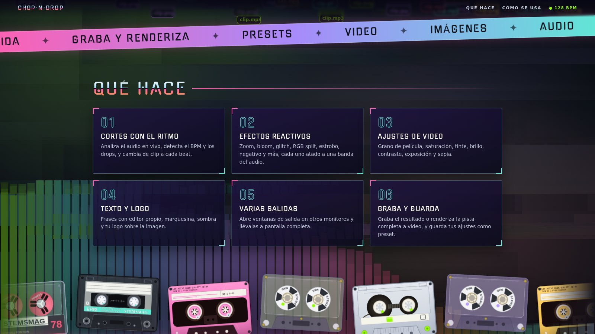
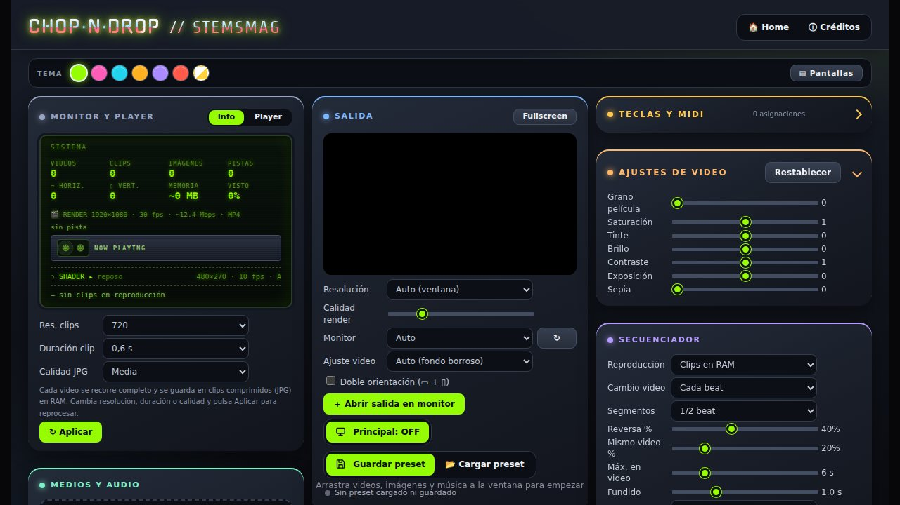
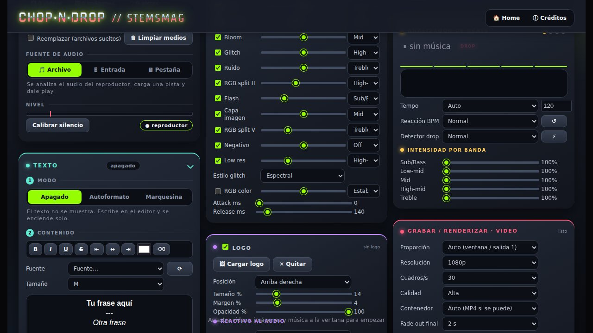

Chop·n·Drop a prueba:
el videoclip que se corta solo
al ritmo de tu pista
Una app que corta, glitchea y renderiza videoclips al compás de cualquier pista. Abrimos cada panel, medimos lo que se puede medir y anotamos dónde se queda corta.

La mayoría de los generadores de video musical en el navegador se quedan en un visualizador de barras sobre fondo negro. Chop·n·Drop, la herramienta gratuita de StemsMag, parte de otra pregunta: ¿y si en lugar de dibujar el audio, el audio editara tus propios videos e imágenes? Le sueltas clips, una pista y un play; la app detecta el BPM, salta de clip en cada kick y le monta encima efectos atados a las frecuencias de la canción. Después lo graba o lo renderiza completo.
01 El concepto
La regla de la casa está escrita en la propia interfaz: todo lo dispara la música; sin sonido no cambia ni se mueve nada. Eso define la experiencia. No hay línea de tiempo ni keyframes: ajustas reglas (cuándo cambiar de video, cuántos segmentos por beat, qué banda mueve cada efecto) y la pista hace el montaje. Es más cercano a un instrumento de VJ que a un editor de video.

02 Flujo de trabajo
El flujo cabe en cuatro gestos, y es de lo mejor que tiene: casi no hay curva de entrada.
Los videos no se reproducen tal cual: cada uno se recorre completo y se guarda como clips comprimidos en JPG dentro de la memoria RAM, con resolución (480p a original), duración (0,6 a 2,5 s) y calidad ajustables. Es lo que permite saltar entre cortes sin tirones, pero implica algo que hay que decir con claridad: todo el proceso es en vivo y requiere un tiempo de preparación para alistar los clips antes de empezar a tocar.

03 Entrada, bandas y BPM
La fuente de audio puede ser el reproductor interno (archivo), una entrada de mixer, interfaz USB o micrófono, o el audio de otra pestaña del navegador. Eso último convierte a la app en un acompañante visual de cualquier cosa que suene en tu equipo, no solo de archivos locales. Incluye ganancia, medidor de nivel y botón para calibrar el silencio.
El análisis divide el espectro en cinco bandas, y todo el resto de la app se organiza alrededor de ellas:
Encima trabaja un analizador de beats con tempo automático o manual, tres velocidades de reacción del BPM y un detector de drop con sensibilidad baja, normal o alta. Es el componente del que depende todo lo demás, y el que más conviene afinar según el género: una pista de techno con kick marcado es el caso fácil; algo más ambiental pide pasar a tempo manual.
04 Efectos atados a cada banda
Esta es la parte más distintiva. Cada uno de los once efectos tiene tres controles: una casilla para encenderlo, un slider de intensidad y un selector de qué banda lo dispara. Los valores de fábrica ya cuentan una historia razonable: el zoom y el flash respiran con el bajo, el glitch y el RGB split reaccionan a los agudos medios.
Por encima de los efectos hay un bloque de ajustes de video fijos (grano de película, saturación, tinte, brillo, contraste, exposición y sepia), un editor de texto propio con modos Autoformato y Marquesina, sombra con ángulo y distancia, y un logo con posición en nueve puntos, tamaño, opacidad y reacción al audio (pulso, brillo y vibración).

05 Salida, render y control en vivo
Aquí la app se parece más a una herramienta de producción que a un juguete. Se puede grabar en directo o renderizar la pista completa desde 0:00, aparte del tamaño de la ventana:
| Opción | Rango |
|---|---|
| Proporción | Auto, 16:9, 9:16, 1:1, 4:5, 21:9 |
| Resolución | 540p, 720p, 1080p, 1440p, 4K |
| Cuadros por segundo | 24 / 30 / 60 |
| Contenedor | Auto (MP4 si se puede), MP4 H.264, WebM VP9 |
| Extras | Fade out final, incluir audio, directo a disco, render MP3, captura PNG |
Las proporciones 9:16 y 4:5 son una señal clara de a quién apunta: a quien necesita un clip vertical para redes sin pasar por un editor. A eso se suma la doble orientación (horizontal y vertical a la vez), salidas en ventanas independientes para otros monitores, presets en .json y un sistema de mapeo para teclas, controles MIDI y mandos (Xbox, PlayStation, Switch o genéricos USB), con los gatillos analógicos funcionando como sliders. El propio manual aclara las reglas: las asignaciones viven en el navegador y no dentro de los presets, y MIDI requiere Chrome o Edge.
Puntuación por categoría
| Categoría | Nota |
|---|---|
| Funciones y profundidad | 9.0 |
| Interfaz y flujo | 8.5 |
| Salida y render | 8.5 |
| Preparación y requisitos | 7.5 |
| Relación con el precio | 9.0 |
A favor
- Entrada casi sin curva: soltar, play y ya hay montaje
- Efectos atados a bandas de audio reales, ajustables uno por uno
- Salidas verticales, horizontales y/o cuadradas pensadas para eventos en vivo y un número x de pantallas
- Soporte para logotipos, marquesinas y mensajes overlay
- MIDI, mandos y varias ventanas de salida para uso en vivo
- Gratis, sin instalación ni cuenta
En contra
- Proceso en vivo con tiempo de preparación; pide GPU de 4 GB y 4 GB de RAM, y pesa más con cada video o imagen
- Sin línea de tiempo: el montaje lo decide la música, no tú
- MIDI limitado a Chrome y Edge
- Estrobo: requiere cuidado en público
Veredicto
Chop·n·Drop no intenta reemplazar a un editor de video, y ahí está su acierto: se queda con la parte más divertida del montaje musical —cortar al beat y reaccionar a las frecuencias— y la entrega lista para usar, sin cuentas ni instalaciones. Para visuales de sets, clips verticales y piezas de promoción rápidas es una herramienta muy completa por cero costo. Lo que hay que tener en cuenta es el equipo: todo corre en vivo, pide un tiempo de preparación y una GPU de al menos 4 GB, así que el resultado depende de cuánto material le cargues. Dentro de esos límites, es lo mejor que se puede obtener por $0. Vale la pena probarla con una pista que conozcas bien.